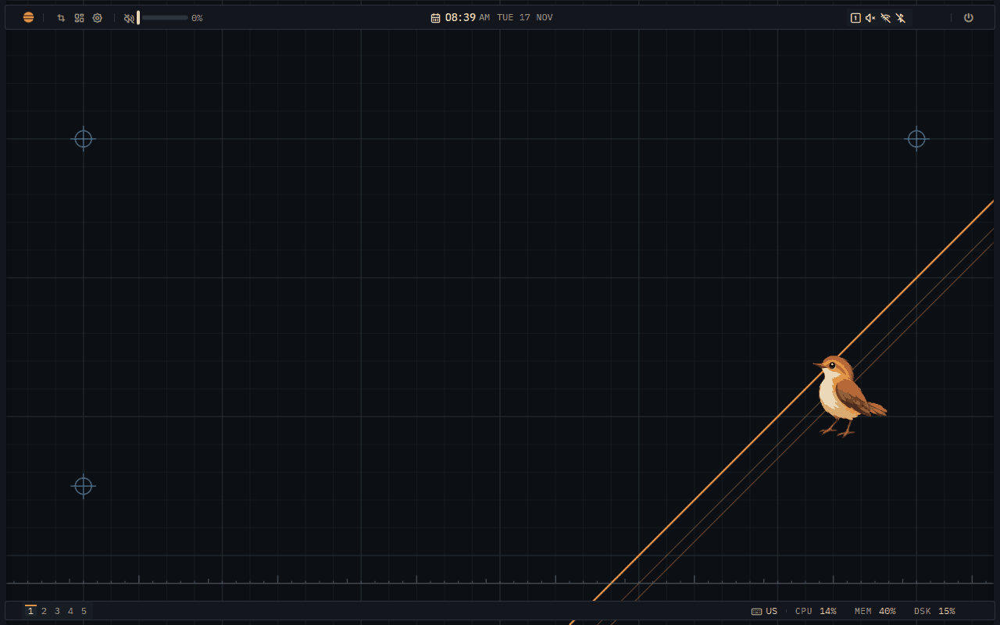

connectivity/bluetooth-service-down INCONCLUSIVE
20261117T083917Z-connectivity-bluetooth-service-down-1 · attempt 1 · 39.734 s · class harness
Reason: setup failed (rc=1): systemctl stop bluetooth.service: Failed to stop bluetooth.service: Access denied as the requested operation requires interactive authentication. However, interactive authentication has not been enabled by the calling program. See system logs and 'systemctl status bluetooth.service' for details.
Instruction
Stop the Bluetooth service, then inspect the bluetooth doctor report without starting anything.
Proof
| where | kind | note | detail |
|---|
Product and environment
| shell_sha | 74619fab04951777b2bdba37c1b80e1d19cb66bc |
|---|---|
| config_sha | 76058860dc3631250a6cd913ddbf1271c0eebf88 |
| horneroctl | horneroctl horneroctl-v0.2.0-preview45-9-g420c73c (420c73c) |
| horneroctl_sha256 | bea50d20f272e14fb1712b880c484c7dc65eb97381759b65f895e4808a700967 |
| engine | native |
| compositor | hyprland |
| hornero_qa | 0.1.0 |
| host_kernel | 7.3.4-arch1-2 |
| qemu | QEMU emulator version 11.1.3 |
| image | signal-s74619fa-c7605886-h420c73c.qcow2 |
| outputs | 1 |
| resolution | 1280x800 |
Screenshots


Actions
{"t": 16.523, "kind": "ready", "serial": []}
{"t": 37.057, "kind": "setup", "run": "systemctl stop bluetooth.service", "rc": 1, "stdout": "", "stderr": "Failed to stop bluetooth.service: Access denied as the requested operation requires interactive authentication. However, interactive authentication has not been enabled by the calling program.\nSee system logs and 'systemctl status bluetooth.service' for details."}
Logs: logs/ · machine-readable: run.json, result.json, assertions.json, actions.jsonl